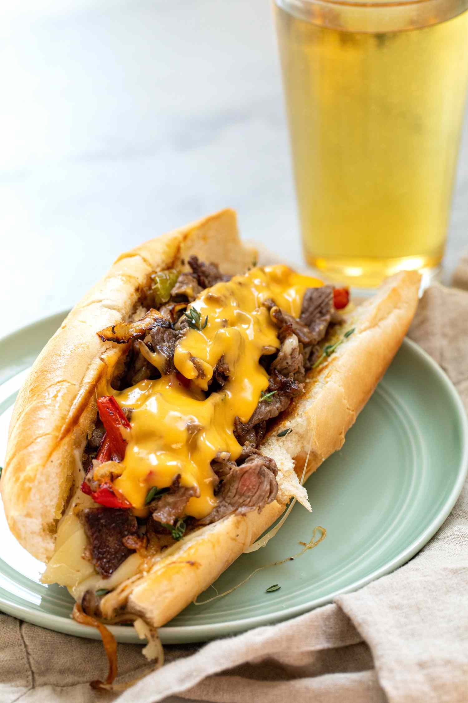

Philly Cheesesteak
Home

Description
Enjoy the classic Philadelphia steak sandwich at home anytime you want.
Ingredients
- 10 to 12 ounces ribeye steak
- 1/2 teaspoon kosher salt
- 1/2 teaspoon black pepper
- 2 tablespoons olive oil, divided
- 1/2 medium sweet onion, sliced
- 1/2 green bell pepper, sliced
- 1/2 red bell pepper, sliced
- 2 ounces (3 slices) provolone cheese
- 2 hoagie rolls, toasted
- 1/4 cup Cheez Whiz, warmed
- Fresh thyme, for garnish, optional
Steps
- Freeze and slice the steak
- Cook the onions and peppers
- Cook the steak
- Finishing the cheesesteak
- Assemble the cheesesteaks and serve